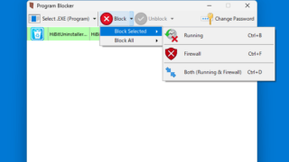

An app that can block the execution of programs (EXE files)

This free software for Windows can block the execution of specific programs (EXE files) and access to the Internet. It can protect programs on your computer from unauthorized access.
Program Blocker Overview
Program Blocker is a program blocking application.
Program Blocker Features
These are the main features of Program Blocker.
| function |
overview |
| Main Features |
Blocking a program |
| Function details |
・You can block the execution of specific programs (EXE files).
・You can also block specific programs using Windows Firewall. |
Blocks EXE files from running
Program Blocker is free software for Windows that can block the execution of specific programs (EXE files) and access to the Internet.
Program Blocker allows you to protect programs from unauthorized access by allowing certain programs to run only when you enter a password.
You can choose from three different blocking methods:
Program Blocker has the ability to "block programs through the firewall," "block programs from running," or "block both at the same time."
Program Blocker is useful if you want to prevent sensitive programs from running on a shared PC, as it prevents anyone from opening the program without knowing the password.
A unique application that can block programs
Program Blocker is a handy application that allows you to block specific programs from running, and is also useful if you want to restrict access to programs by blocking them with a firewall.
|